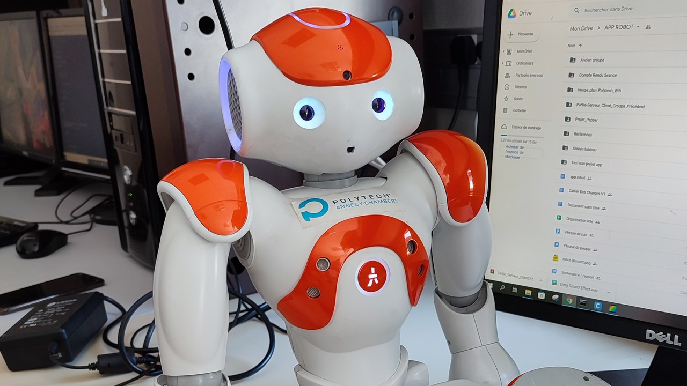

Apprentissage par Problèmes et par Projet - Robotique de service
Laissez-vous guider !
Durant notre formation à l'école d'ingénieurs Polytech Annecy-Chambéry dans la filière "Systèmes Numériques - Instrumentation", nous avons réalisé un projet sur le thème "Robotique de Service". Notre équipe s'est donné comme objectif de pouvoir faire faire une visite guidée de notre établissement par les robots Pepper et Nao, de Softbank Robotics.
Vous pourrez en apprendre plus sur notre équipe, nos objectifs, et notre avancement sur ce site !
Bonne visite !

L'Apprentissage par Problèmes et par Projet est un module obligatoire dans la formation SNI de Polytech Annecy-Chambéry. Il s'agit un long projet étalé sur deux ans, par équipes. Chaque élève choisit la thématique qu'il préfère, et c'est ainsi que notre équipe Robotique de Service a été créée. Nous devons travailler sur ce projet sur un total de quatre semestres, respectivement axés sur la découverte, le cahier des charges, l'implémentation et la mise en valeur de notre projet. C'est à nous, les élèves, de déterminer nos objectifs, en rapport avec notre thème.
Notre thème étant la robotique de service, et ayant à notre disposition des robots Pepper et Nao de Softbanks Robotics, nous avons décidé de partir sur du guidage, notre but final étant de faire faire une visite guidée de notre établissement aux robots lors d'une journée portes ouvertes, avec Nao à l'accueil et Pepper comme guide. Ce projet nous permet d'explorer de nombreux aspects de notre formation que nous ne voyons pas forcément en cours et qui sont spécifiques à chaque projet. Nous aurons ainsi l'occasion d'approfondir nos connaissances sur les serveurs, le code de sites et applications web, ou encore le travail avec des robots en utilisant le logiciel Choregraphe.
Ce projet est également l'occasion de travailler avec une équipe nombreuse (nous étions 8 au début) que nous n'avons pas choisie. La méthode de notation est particulière, avec une grande importance donnée à des entretiens individuels en plus d'une soutenance et d'un rapport de fin de semestre qui viennent régulièrement résumer notre travail. L'école met peu à peu en place un système de notation par compétences, qui nous force à prendre du recul sur ce que nous sommes capables de faire et notre évolution grace aux différents projets - et particulièrement l'APP. C'est donc un module très important dans notre cycle ingénieurs.
Sur ce site, vous trouverez un résumé de notre cahier des charges sur la page Objectifs, une explication de notre implémentation sur la page Avancement, une présentation de notre équipe et de son évolution au cours du temps sur la page Notre équipe, et enfin tous nos documents obligatoires, c'est-à-dire les compte-rendus de fin de séances et les rapports de fin de semestres, accompagnés de résumés de notre avancée rédigés au fur et à mesure de notre travail, sur la page Archives.
Robot PEPPER

Pepper est un robot humanoïde. Nous souhaitons en faire un guide mobile permettant aux visiteurs de découvrir notre bâtiment. Nous utilisons sa tablette tactile comme interface avec un plan des différents étages permettant aux utilisateurs de sélectionner leur destination, avec comme objectif final que Pepper puisse ainsi amener les visiteurs là où ils le souhaitent... Ne vous laissez pas distancer !
Robot NAO
Nao est un tout petit robot. Pour des raisons de batterie et de stabilité, nous n'avons pas prévu de l'utiliser comme guide. Son rôle sera plutôt d'accueillir les visiteurs. Il sera possible d'interagir avec lui pour lui demander des renseignements sur l'école, ou encore lui demander comment trouver Pepper afin d'essayer la visite guidée. Et qui sait, s'il est de bonne humeur, il vous chantera peut-être une chanson...